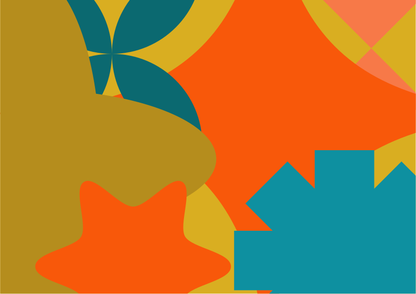
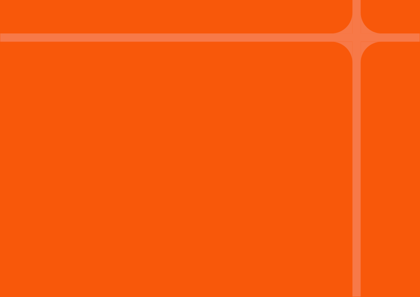

Esta página mostra todos os elementos visuais da marca. A explicação das regras está no DESIGN.md; os valores, em tokens/.
Cores
#f8580a#d9ae21#0e90a0#efefefTons de apoio (formas gráficas)
#f77948#b58d1d#0b6970Derivados para texto e interface (não constam no guia original)
#2b2b2b texto corrido#b04406 texto laranja pequeno#ffffff cartõesMonocromático (logo em cinza)
#b2b2b2#9d9d9c#878787#706f6fTipografia
Barlow Medium · SemiBold
abcdefghijklmn
opqrstuvwxyz
Lexend Light · Regular · SemiBold · Bold · ExtraBold
abcdefghijklmn
opqrstuvwxyz
Hierarquia
Título 1 — Barlow 600
Título 2 — Barlow 600
Título 3 — Barlow 600 em teal
Texto corrido em Lexend Light. A ciência, em sua essência, é o ato de iluminar o desconhecido. Use negrito apenas para as ideias-chave e links em teal escuro.
Transforme processos em resultados
Logo
Quatro versões: horizontal, vertical, abreviada e símbolo. Cada uma existe em laranja, claro, teal e cinza (arquivos em assets/logos/). Sobre fundos de cor, use a versão clara.
Ícones de aplicativo
Elementos gráficos


Componentes
Cartão
Fundo branco, cantos grandes.
TagCartão laranja
Texto claro; use só em texto grande.
Cartão teal
Texto claro; use só em texto grande.
Cartão ouro
Texto escuro (tinta), nunca claro.
Botão principal Botão secundário
Chamada. Para avisos, definições e citações.
| Coluna | Valor |
|---|---|
| Linha 1 | 120 |
| Linha 2 | 87 |
Fazer e evitar
Fazer
- Texto corrido em tinta (#2b2b2b) sobre claro.
- Laranja em títulos grandes e destaques.
- Texto claro sobre laranja, teal e fundos escuros em tamanho grande.
- Cantos bem arredondados e muito espaço em branco.
Evitar
- Parágrafos em laranja, ouro ou teal sobre claro (contraste baixo).
- Texto claro sobre ouro.
- Esticar, girar ou recolorir o logo fora das versões fornecidas.
- Branco puro como fundo de página (use #efefef).